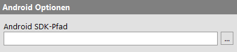
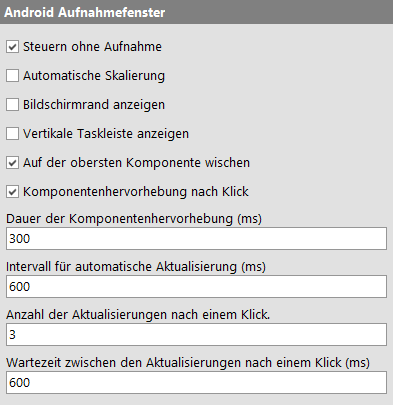

| Version 6.0.3 |
Die folgenden Einstellungen haben Einfluss auf Tests von Android-Anwendungen.
|
|  | ||
|
| Abbildung 37.27: Android-Optionen | ||
Geben Sie hier den Installationspfad Ihres Android-SDK an.
Der Name dieses Verzeichnisses lautet üblicherweise sdk
und enthält unter anderem ein Unterverzeichnis tools
oder cmdline-tools.
Diese Einstellung muss nur gesetzt werden, falls QF-Test den Pfad nicht automatisch ermitteln kann.
Wenn diese Option aktiviert ist werden weitere Informationen in das Protokoll geloggt.
Wenn diese Option aktiviert ist und ein Emulator über den 'Android Emulator starten' Knoten gestartet wurde, dann werden die stdout/stderr Ausgaben des gestarteten Emulators an das QF-Test Terminal weitergegeben.
Über die folgenden Einstellungen lässt sich Aussehen und Funktionsweise des Android-Aufnahmefensters anpassen.
|
|  | ||
|
| Abbildung 37.28: Optionen für das Android-Aufnahmefenster | ||
Ist diese Option aktiviert werden Klicks und andere Eingaben im Android-Aufnahmefenster an das aktive Gerät oder den aktiven Emulator weitergegeben, auch wenn sich QF-Test nicht im Aufnahmemodus befindet.
Wenn diese Option gesetzt ist, wird das Vorschaubild im Android-Aufnahmefenster automatisch anhand der Fenstergröße skaliert.
Zeichnet einen Rahmen um den Rand des virtuellen Bildschirms im Aufnahmefenster.
Dadurch kann der Rand des Gerätes besser erkennbar werden, falls dessen Inhalt eine ähnliche Farbe hat wie das Aufnahmefenster.
Blendet eine zusätzliche Leiste am Rand des Aufnahmefensters ein, die Aktionen zur Bedienung typischer Navigationselemente eines Gerätes enthält. Im Aufnahmemodus werden diese als Events aufgezeichnet.
Ist diese Option aktiviert, so werden Wischgesten immer auf der obersten Komponente aufgenommen.
Durch unterschiedliche Bildschirmgrößen und -Auflösungen von Geräten kann es vorkommen, dass einzelne Komponenten nicht immer innerhalb des sichtbaren Bereiches liegen. Dadurch können Wischgesten, bei denen die darunterliegende Komponente unwichtig ist, unzuverlässig werden. Besonders die Aufnahme von Navigationsgesten kann durch diese Option verbessert werden.
Ist diese Option aktiviert, so wird nach einem Klick im Aufnahmefenster die darunterliegende Komponente für kurze Zeit durch einen Rahmen hervorgehoben.
Dies kann hilfreich sein um schnell zu prüfen, ob ein Klick korrekt interpretiert wurde.
Hiermit steuern Sie, wie lange der Rahmen um eine ausgewählte Komponente angezeigt werden soll.
Hiermit steuern Sie, wie oft QF-Test versuchen soll, den Inhalt des Aufnahmefensters zu aktualisieren.
Bitte beachten Sie, dass die maximale Geschwindigkeit der Aktualisierung vom verwendeten Gerät oder Emulator abhängt. Ein geringerer Intervall-Wert hat dann keinen Effekt.
Ein zu geringer Wert kann die Systemleistung negativ beeinträchtigen.
Hiermit legen Sie fest, wie oft das Aufnahmefenster nach einem Klick aktualisiert wird. Diese Option ist nur relevant, wenn die automatische Aktualisierung deaktiviert ist.
Je nach der in Android konfigurierbaren Animationsgeschwindigkeit kann es vorkommen, dass das Vorschaufenster während einer laufenden Animation aktualisiert wird. In solchen Fällen kann diese Option hilfreich sein.
Hiermit legen Sie fest, wie viel Zeit zwischen den Aktualisierungen nach einem Klick vergehen soll. Diese Option ist nur relevant, wenn die automatische Aktualisierung deaktiviert ist.
Bitte beachten Sie, dass die maximale Geschwindigkeit der Aktualisierung vom verwendeten Gerät oder Emulator abhängt. Ein geringerer Intervall-Wert hat dann keinen Effekt.
| Letzte Änderung: 6.9.2022 Copyright © 1999-2022 Quality First Software GmbH |